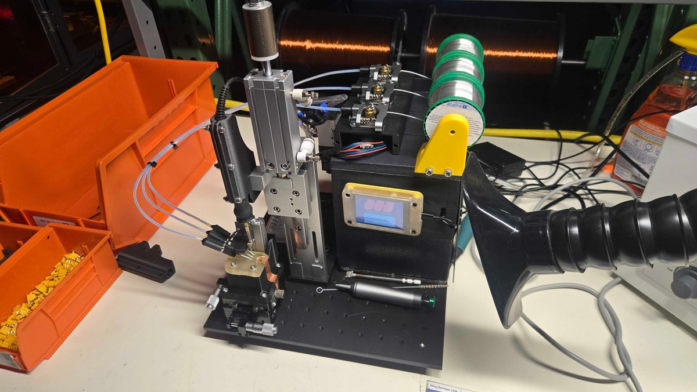
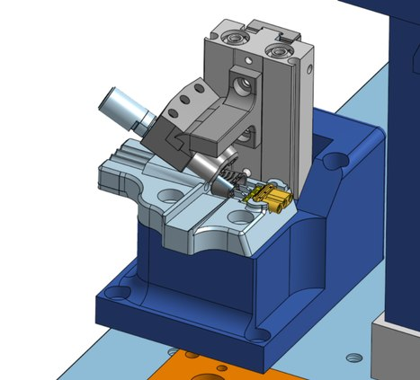
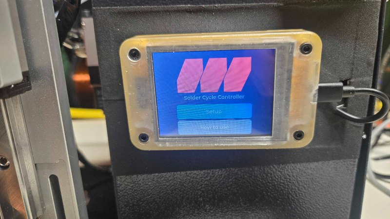
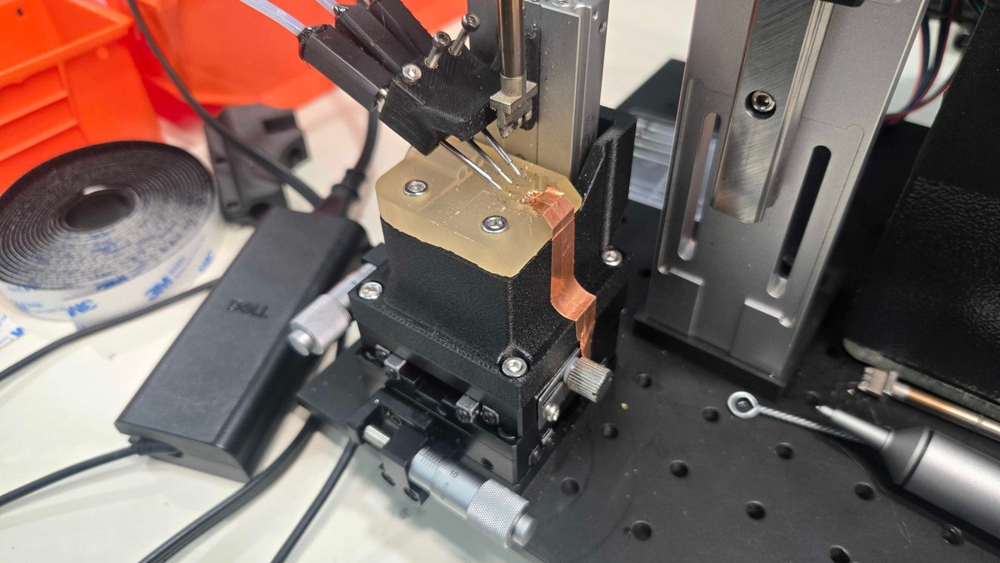

MR30 Wire Harness Soldering Machine
Situation. A purchased MR30 harness soldering machine produced more than 70% scrap.
Task. I took responsibility for the replacement machine's mechanical design and fixtures.
Action. I reused working hardware, reverse-engineered the tip mechanism, and designed Onshape fixtures with two pneumatic actuators and an X-Y alignment table adjustable to 0.01 mm. A collaborator handled most software; I improved calibration and configured stepper stall protection and CoolStep.
Result. A prototype worked within a weekend. Scrap fell to 10-20%, at one harness every 12 seconds.



